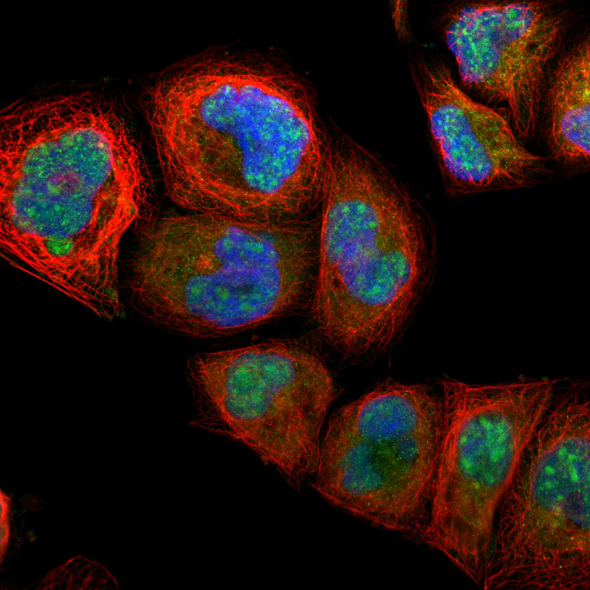
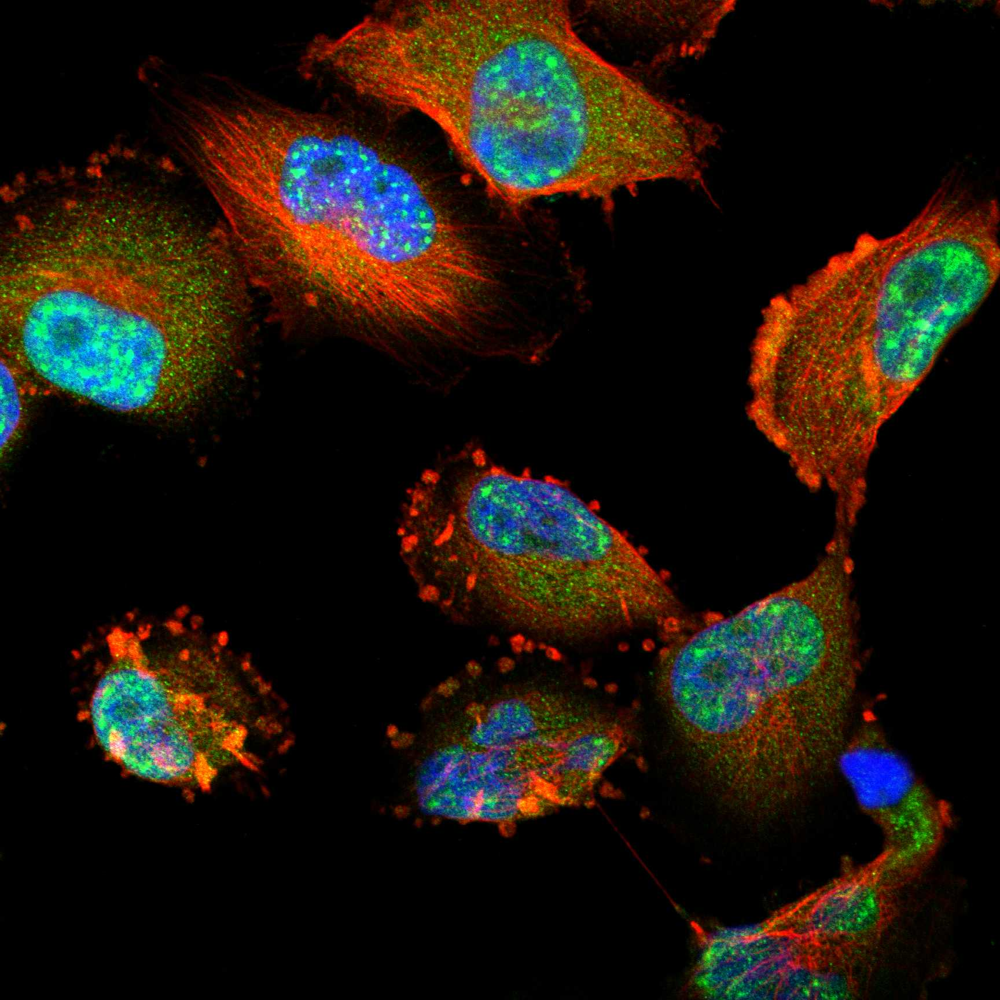
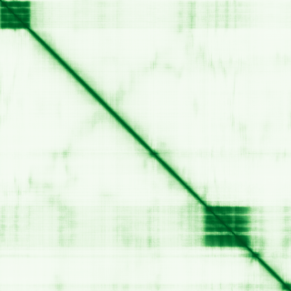

type: protein-evaluation gene: "ELOA" date: 2026-06-03 tags: [protein-scout, nuclear-protein, evaluation] status: scored ---
ELOA 核蛋白评估报告 (Full Re-evaluation)
1. 基本信息
| 项目 | 内容 |
|---|---|
| 基因名 / 别名 | ELOA / TCEB3 |
| 蛋白名称 | Elongin-A |
| 蛋白大小 | 772 aa / 87.2 kDa |
| UniProt ID | Q14241 |
| 评估日期 | 2026-06-03 |
IF 图像:  
2. 评分总览
| 维度 | 得分 | 满分 | 加权后 | 关键证据摘要 |
|---|---|---|---|---|
| 核定位特异性 | 7/10 | ×4 | 28 | HPA: Nuclear speckles; 额外: Cytosol; UniProt: Nucleus |
| 蛋白大小 | 10/10 | ×1 | 10 | 772 aa / 87.2 kDa |
| 研究新颖性 | 8/10 | ×5 | 40 | PubMed strict=22 篇 (≤40→8) |
| 三维结构 | 6/10 | ×3 | 18 | AlphaFold v6 pLDDT=57.0; PDB: 4HFX, 6ZUZ, 8OEV, 8OEW, 8OF0 |
| 调控结构域 | 7/10 | ×2 | 14 | InterPro: IPR051870, IPR001810, IPR010684, IPR003617, IPR035 |
| PPI 网络 | 3/10 | ×3 | 9 | STRING 15 partners; IntAct 15 interactions |
| 互证加分 | — | max +3 | 2.5 | PDB+AF+STRING+IntAct cross-validation |
| 原始总分 | 121.5/180 | |||
| 归一化总分 | 67.5/100 |
3. 详细分析
3.1 核定位证据
| 来源 | 定位 | 可信度 |
|---|---|---|
| Protein Atlas (IF) | Nuclear speckles; 额外: Cytosol | Approved |
| UniProt | Nucleus | Swiss-Prot/TrEMBL |
IF 图像获取: IF图像已下载并嵌入 (2张)
GO Cellular Component:
- elongin complex (GO:0070449)
- extracellular space (GO:0005615)
- nucleoplasm (GO:0005654)
- site of DNA damage (GO:0090734)
结论: 主要核定位，HPA 可靠性良好，有辅助数据源支持。
3.2 蛋白大小评估
评价: 大小适中（200-800 aa），适合常规生化实验和结构解析。
3.3 研究现状
| 指标 | 数值 |
|---|---|
| PubMed strict count | 22 |
| PubMed broad count | 86 |
| 别名(未计入scoring) | Aliases observed but not used for scoring: TCEB3 |
关键文献: 1. Transcriptional Elongation-Associated RNA Processing Errors in Induced Cellular Growth Arrest.. *bioRxiv : the preprint server for biology*. PMID: 40599158 2. Identification and validation of paraptosis-related biomarkers in recurrent miscarriage.. *Frontiers in immunology*. PMID: 41268559 3. Defective RNA processing and ELOA-mediated transcriptional elongation in reversible cellular senescence suggest aging by transcription.. *Molecular cell*. PMID: 41418754 4. ELOA promotes tumor growth and metastasis by activating RBP1 in gastric cancer.. *Cancer medicine*. PMID: 37694492 5. CDKL5 kinase controls transcription-coupled responses to DNA damage.. *The EMBO journal*. PMID: 34605059
评价: 非常新颖，仅有少数基础研究。
3.4 三维结构分析
| 指标 | 数值 |
|---|---|
| AlphaFold 版本 | v6 |
| AlphaFold 平均 pLDDT | 57.0 |
| 高置信度残基 (pLDDT>90) 占比 | 17.1% |
| 置信残基 (pLDDT 70-90) 占比 | 13.7% |
| 中等置信 (pLDDT 50-70) 占比 | 10.1% |
| 低置信 (pLDDT<50) 占比 | 59.1% |
| 有序区域 (pLDDT>70) 占比 | 30.8% |
| 可用 PDB 条目 | 4HFX, 6ZUZ, 8OEV, 8OEW, 8OF0 |
PAE (Predicted Aligned Error): 
评价: AlphaFold 预测质量有限（pLDDT=57.0），有序残基占 30.8%。
3.5 结构域分析
| 来源 | 结构域 |
|---|---|
| InterPro/Pfam | InterPro: IPR051870, IPR001810, IPR010684, IPR003617, IPR035441; Pfam: PF06881, PF08711 |
染色质调控潜力分析: 存在已知结构域注释，可作为功能研究的结构基础。
3.6 PPI 网络
STRING 预测互作 (combined score >0.4):
| Partner | Combined Score | Experimental | 功能类别 |
|---|---|---|---|
| ELOB | 0.999 | 0.839 | — |
| ELOC | 0.999 | 0.898 | — |
| LEO1 | 0.984 | 0.779 | — |
| CTR9 | 0.977 | 0.701 | — |
| TCEA2 | 0.968 | 0.000 | — |
| REXO1 | 0.958 | 0.512 | — |
| ERCC6 | 0.953 | 0.343 | — |
| WDR61 | 0.952 | 0.292 | — |
| CCNT1 | 0.949 | 0.000 | — |
| CDC73 | 0.945 | 0.292 | — |
实验验证互作 (IntAct):
| Partner | 方法 | PMID | ||
|---|---|---|---|---|
| Dmel\CG10694 | psi-mi:"MI:0018"(two hybrid) | pubmed:14605208 | imex:IM-16524 | |
| NINL | psi-mi:"MI:0398"(two hybrid pooling approach) | pubmed:16189514 | imex:IM-16520 | |
| fd59A | psi-mi:"MI:0018"(two hybrid) | pubmed:14605208 | imex:IM-16524 | |
| term | psi-mi:"MI:0018"(two hybrid) | pubmed:14605208 | imex:IM-16524 | |
| Pal2 | psi-mi:"MI:0018"(two hybrid) | pubmed:14605208 | imex:IM-16524 | |
| Dmel\CG6607 | psi-mi:"MI:0018"(two hybrid) | pubmed:14605208 | imex:IM-16524 | |
| Src64B | psi-mi:"MI:0018"(two hybrid) | pubmed:14605208 | imex:IM-16524 | |
| EloC | psi-mi:"MI:0018"(two hybrid) | pubmed:14605208 | imex:IM-16524 | |
| RhoGAP92B | psi-mi:"MI:0018"(two hybrid) | pubmed:14605208 | imex:IM-16524 | |
| FSBP | psi-mi:"MI:0397"(two hybrid array) | pubmed:19060904 | imex:IM-20259 |
PPI 互证分析:
- STRING + IntAct 均有数据
- STRING partners: 15，IntAct interactions: 15
- 调控相关比例: 0 / 15 = 0%
评价: STRING 15 个预测互作，IntAct 15 个实验互作。调控相关配体占比 0%。
3.7 多库互证
| 维度 | 来源 | 结果 | 是否一致 |
|---|---|---|---|
| 三维结构 | AlphaFold pLDDT=57.0 + PDB: 4HFX, 6ZUZ, 8OEV, 8OEW, 8OF0 | pLDDT=57.0, v6 | 预测+实验 |
| 定位 | UniProt + HPA | Nucleus / Nuclear speckles; 额外: Cytosol | 一致 |
| PPI | STRING + IntAct | 15 + 15 interactions | 数据充分 |
互证加分明细:
- PDB + AlphaFold 双源验证: +0.5
- 多库定位一致 (3源): +0.5
- STRING + IntAct 双源验证: +0.5
- 结构域 + AlphaFold 质量: +0
- PDB 多条目覆盖 (≥3): +1.0
总分: +2.5 / max +3
4. 总体评价
推荐等级: ⭐⭐⭐
核心优势: 1. ELOA — Elongin-A，非常新颖，仅有少数基础研究。 2. 蛋白大小772 aa，大小适中（200-800 aa），适合常规生化实验和结构解析。
风险/不确定性: 1. PubMed 22 篇，已有一定研究基础 2. AlphaFold 预测质量一般（pLDDT=57.0），需要更多实验结构验证
下一步建议:
- [ ] 查阅最新关键文献补充研究背景
- [ ] 获取 Protein Atlas IF 图像确认亚细胞定位
- [ ] 设计体外实验验证核定位及潜在调控功能
5. 数据来源
- UniProt: https://www.uniprot.org/uniprotkb/Q14241
- Protein Atlas: https://www.proteinatlas.org/ENSG00000011007-ELOA/subcellular
- PubMed: https://pubmed.ncbi.nlm.nih.gov/?term=ELOA
- AlphaFold: https://alphafold.ebi.ac.uk/entry/Q14241
- STRING: https://string-db.org/network/9606.ENSP00000
- Data fetched live: 2026-06-03
<!-- DOMAIN_HUMANPPI_REPAIR_START -->
Domain/SMART 与 humanPPI 补充（2026-06-07）
SMART / UniProt domain
| Source | Data | ||
|---|---|---|---|
| UniProt | Q14241 | ||
| SMART | SM00509; | ||
| UniProt Domain [FT] | DOMAIN 4..79; /note="TFIIS N-terminal"; /evidence="ECO:0000255\ | PROSITE-ProRule:PRU00649"; DOMAIN 566..610; /note="F-box"; /evidence="ECO:0000255\ | PROSITE-ProRule:PRU00080" |
| InterPro | IPR051870;IPR001810;IPR010684;IPR003617;IPR035441;IPR017923; | ||
| Pfam | PF06881;PF08711; |
humanPPI / HPA Interaction
Source: https://www.proteinatlas.org/ENSG00000011007-ELOA/interaction
| Partner | Datasets | AF3/HPA structure |
|---|---|---|
| CTR9 | Intact, Biogrid | true |
| LEO1 | Intact, Biogrid | true |
| ASB9 | Biogrid | false |
| AXIN2 | Intact | false |
| BACH2 | Intact | false |
| CBY2 | Intact | false |
| CDC73 | Biogrid | false |
| CDR2L | Intact | false |
<!-- DOMAIN_HUMANPPI_REPAIR_END -->